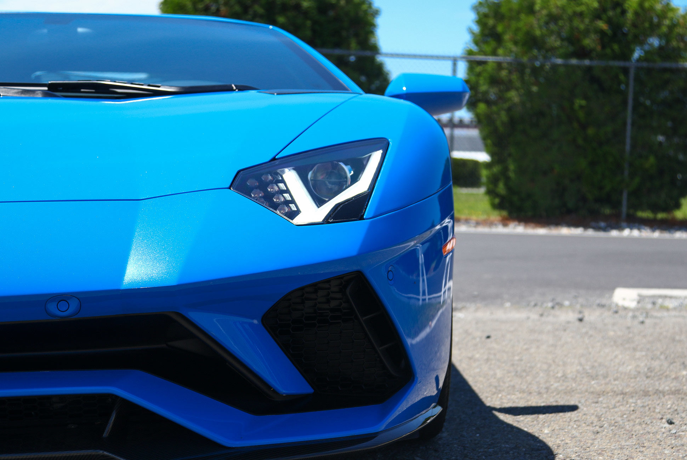
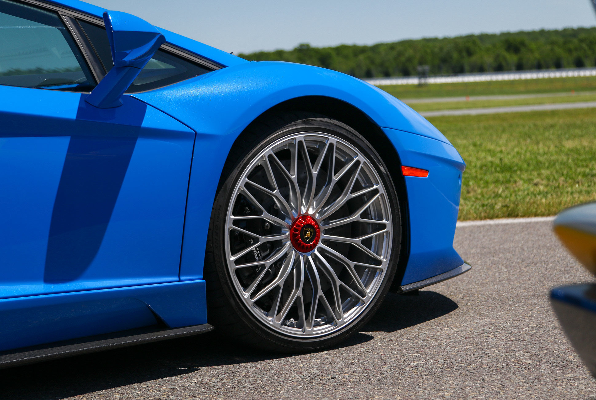
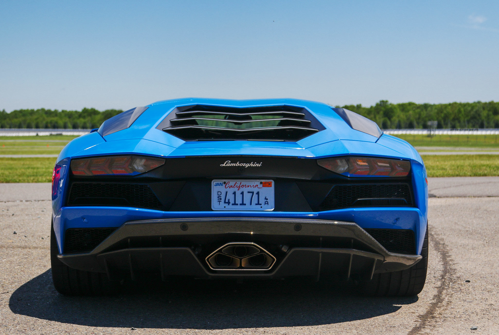
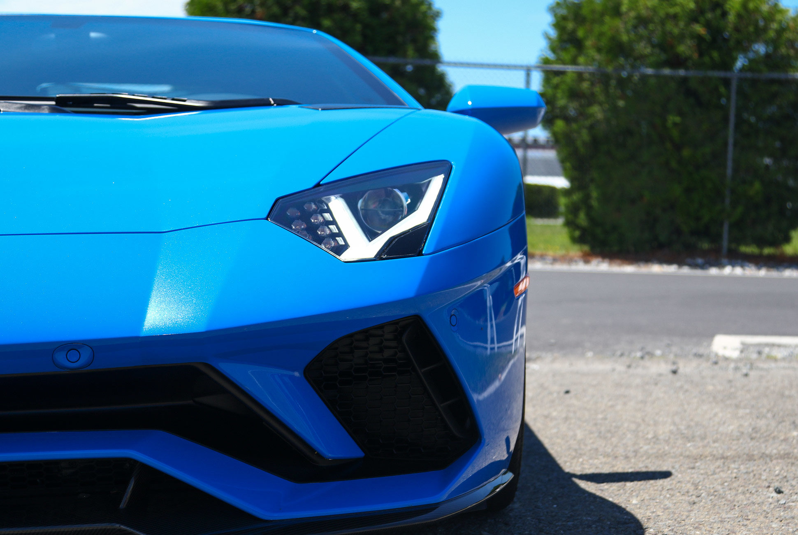
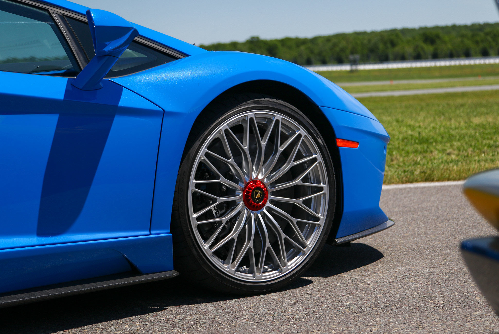
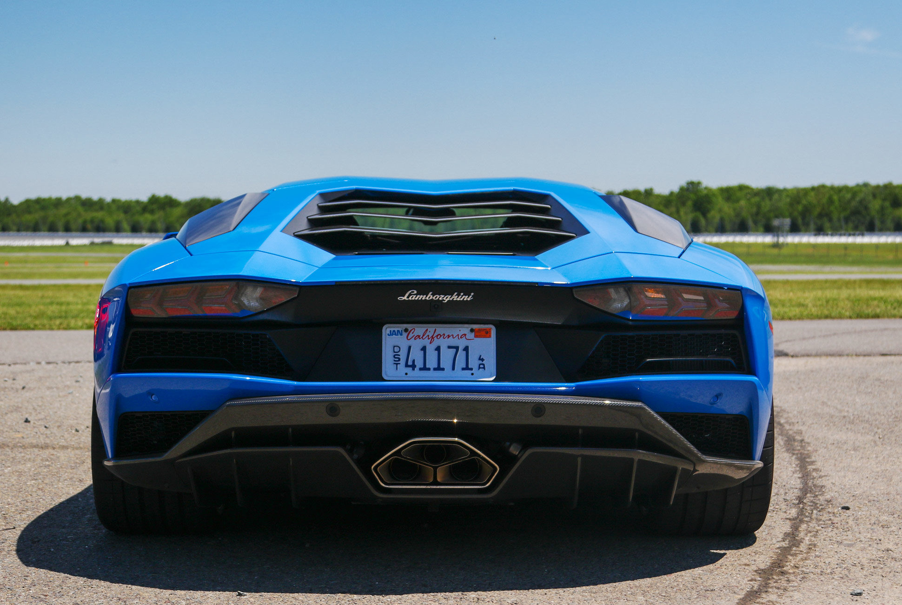
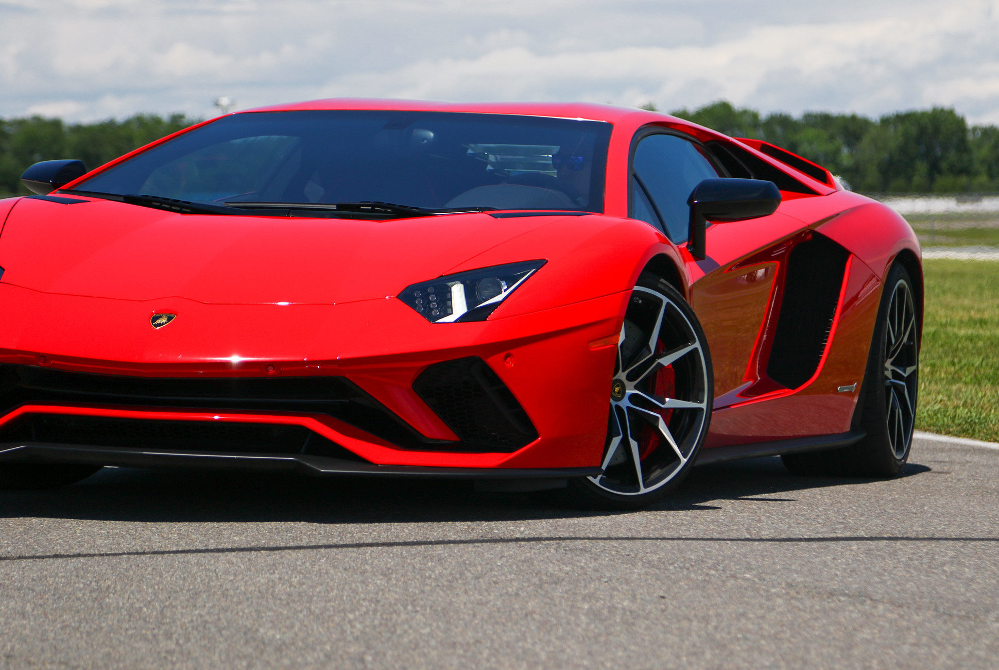
An icon cannot be reinvented, it can only be challenged. And only Aventador
could surpass itself. Following Miura, Islero, Countach, and Urraco,
Lamborghini’s most iconic model now reaps the inheritance of the historic S
models and evolves into the new Aventador S. Exclusive Lamborghini design
and the new V12 engine with a whopping 740 HP now join the most
sophisticated technology of the range, featuring the new LDVA (Lamborghini
Dinamica Veicolo Attiva/Lamborghini Active Vehicle Dynamics), which offers an
unparalleled driving experience to all those who honour their egos by
challenging themselves every day.
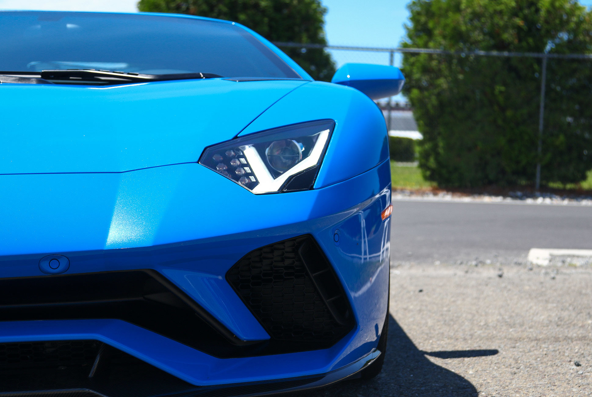
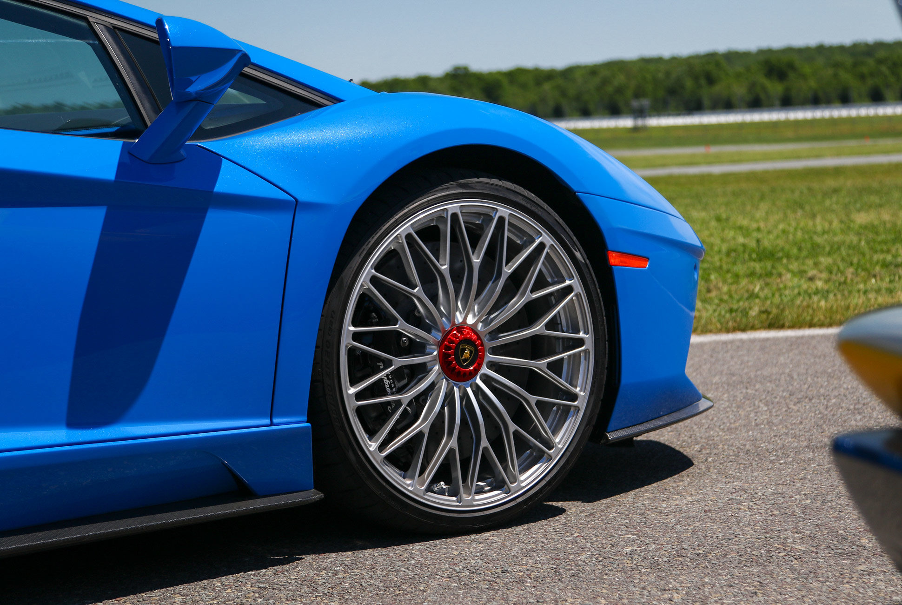
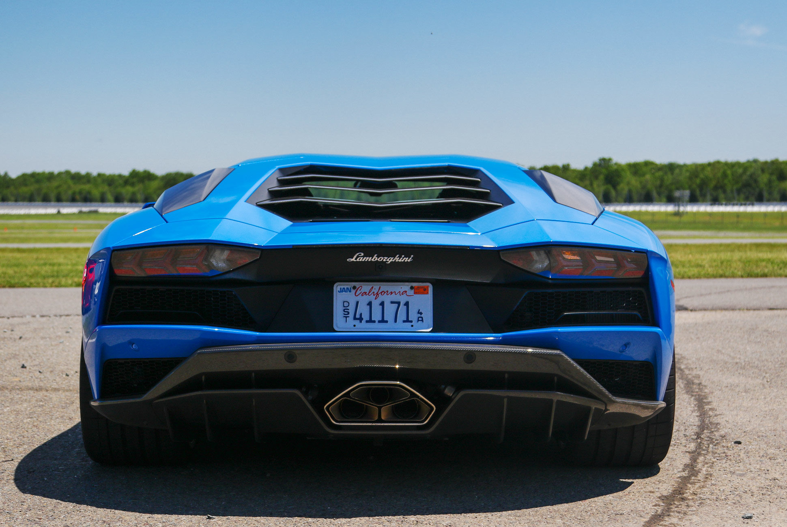
INTERIOR
 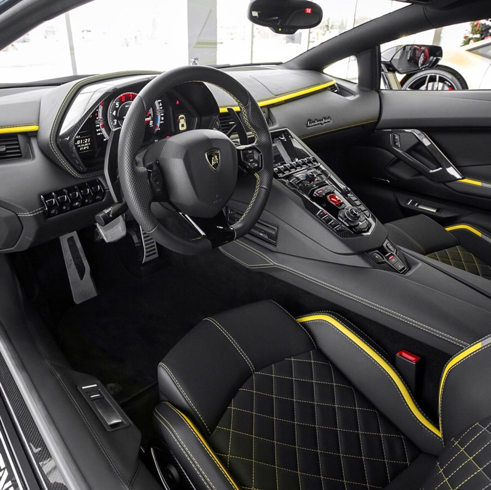
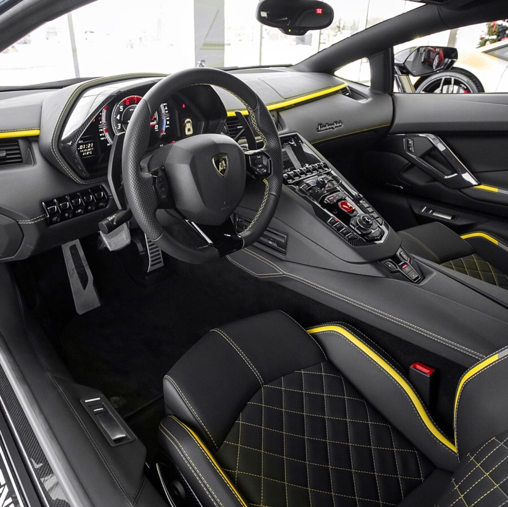
The interiors of the new Aventador S fully reflect the car’s mission, which is, to be different from
all others: a super sports car with cutting-edge technology but also incredibly luxurious. The
interior finishes are crafted using materials of the highest quality and present an infinite variety
of possibilities, like the new S-trim configuration, created to celebrate the car’s name. The
options also include the possibility to choose an innovative material such as Carbon Skin® and
to have certain parts of the carbon body left exposed. The elegance of the interior is matched
with the extremely advanced technology, such as the instrument panel with interactive TFT LCD
display with completely redesigned graphics, and the possibility to enhance the interiors with
a LED lighting system created ad hoc.
In addition to its beating heart, Aventador S is also endowed with an incredibly sophisticated brain: the innovative
Lamborghini Active Vehicle Dynamics (LDVA) control unit, a system of active technologies that can manage each of
the dynamic axles of the vehicle. The lateral vehicle dynamics is controlled by a steering system that involves all four
wheels using Lamborghini Dynamic Steering (LDS) and Lamborghini Rear-wheel Steering (LRS). The vertical vehicle
dynamics is handled by the Lamborghini Magneto-rheological suspension (LMS) and the active rear aerodynamics. And
the longitudinal dynamics relies on the four-wheel drive system (4WD). The LDVA system combines all the information
coming from the car’s sensors and establishes in real time the best setting for each driving condition. The result is
performance that is absolutely perfect, safe, and compelling.